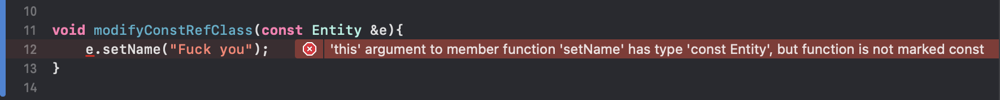

Const Keyword
Why Labeling Const for Functions?
Example 1: Pass-by-Reference and Const Functions
It is very important to lebel the functions that do not produce any side-effect with the const keyword. This is very useful when someone use write a pass-by-reference function. A good pracitice is to make the parameter const such that this object can only invoke the const member methods.
The Entity.hpp file
#ifndef Entity_hpp
#define Entity_hpp
#include <iostream>
class Entity {
private:
std::string name_;
public:
Entity();
std::string getName() const;
void setName(const std::string &name);
};
class Player : public Entity {
public:
Player();
Player(const std::string &name);
};
#endif /* Entity_hpp */
The implementation Entity.cpp file
#include "Entity.hpp"
void Entity::setName(const std::string &name){
name_ = name;
};
std::string Entity::getName() const{
return name_;
}
Entity::Entity(){
this->setName("Entity");
}
Player::Player(){
this->setName("Player");
}
Player::Player(const std::string &name){
this->setName(name);
}
In your main.cpp file, you want to write a pass-by-reference function that uses the Entity type.
void modifyConstRefClass(const Entity &e){
e.setName("Fuck you");
}
But since setName(...) does not the const keyword.
The compiler will stop you doing that.

Example 2: Low/Top Level Const
In C++ primer, you will learn low and top level const.
- Top-level const refers to a
constobject itself.- 一句话 ： direct variable in any types
- Low-level const refers to a
constobject that is pointed by a pointer or reference.- 一句话 ： indirect variable in pointer or reference.
We can convert a non-const to const.
Low-level const ci because a pointer points to it (note that a non-const can be automatically converted to const).
int i = 10;
const int *p = &i;
Top-level const p (instead of i), we can't change p so it is a top-level const.
int i = 10;
int *const p = &i;
Why Low/Top Level Const Matter - Modification
With const keyword, you can't modify the content of the object.
For top-level const, you can't change the pointer directly.
int i = 0;
int *const p = &i;
// You can't modify the address in the pointer.
int ii = 10;
p = ⅈ
// But you could you modify the content which this pointer points to.
*p = 10;
For low-level const, you can't change the object that is refered by pointer or reference.
int i = 0;
const int *p = &i;
// re-binding is okay
int ii = 10;
p = ⅈ
// but the content which the pointer points to is protected.
*p = 10;
But note that, const in reference type is always low-level. Note that there's no way to rebind references (you cannot make a reference r refer to a different object). In fact, reference is always with top-level const.
int i = 10;
const int &r = i;
// in fact, the top-level const is in reference type.
const int const &r = i;
// rebinding is not allowed.
int ii = 10;
r = ii
For low-level const, the content is read-only (but the pointer may be not).
// the content is protected (content is referred by `r`).
r = 10;
Why Low/Top Level Const Matter - Copy
The const also matters in copying.
That is because you can only convert a non-const to a const but not the other way round.
// `int` to `const int` is okay
int i = 10;
const int &r = i;
const int *p = &i;
But it will be prohibited if convert a const to non-const.
const int ci = 10;
int *p = &ci; // not allowed
int &p = ci; // not allowed